Plaatje zien, woord zeggen
Zie een plaatje en zeg het woord: je telefoon luistert mee en helpt met een hint als het niet lukt. Elke dag een korte set, in je eigen tempo.
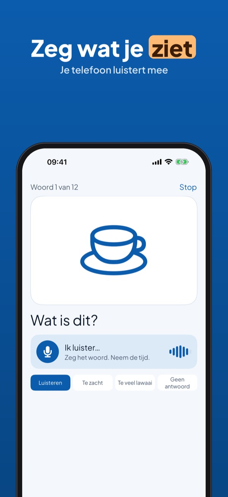
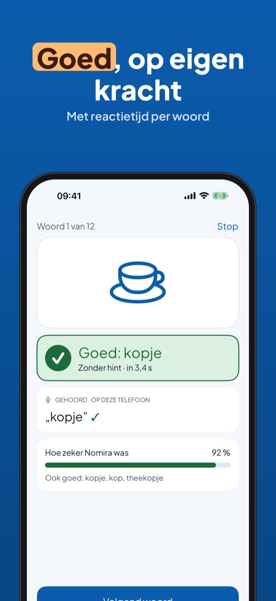
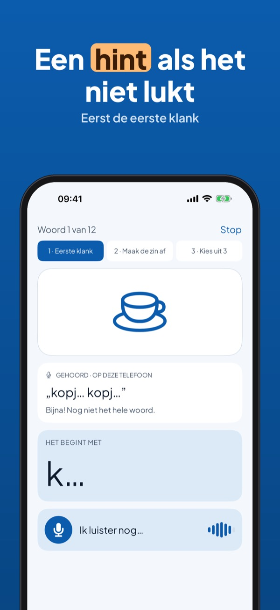
Nomira helpt mensen met afasie om elke dag woorden te oefenen. Je ziet een plaatje en zegt het woord hardop. Nomira luistert op je telefoon en laat zien of het woord gehoord is. Lukt het niet, dan volgt een hint: eerst de eerste klank, dan een zin om af te maken, dan drie woorden om uit te kiezen.
De set Keuken met 15 woorden, luisteren, alle drie de hints, reactietijd, de voortgang van deze week en zelf aangeven of het goed ging werken zonder aankoop. Nomira Plus is een eenmalige aankoop: alle 9 sets, ook werkwoorden ("Wat doet hij?"), de voortgang van eerdere weken en het weekrapport als PDF, dat je zelf verstuurt via mail, Berichten of AirDrop. Geen abonnement, geen reclame.
Nomira is een oefenapp: een aanvulling op logopedie, geen vervanging ervan. Nomira stelt geen diagnose en behandelt niets. Herkenning kan zich vergissen; jij beslist altijd zelf. Woorden worden op je telefoon herkend; er wordt geen geluid opgeslagen of verstuurd. Zonder microfoon geef je zelf aan of het goed ging.
Terms of Use (EULA): https://www.apple.com/legal/internet-services/itunes/dev/stdeula/
Privacy: https://apps.baytech.nl/nomira-eu/
Zobacz obrazek, powiedz słowo
Zobacz obrazek i powiedz słowo: telefon słucha i pomaga podpowiedzią, gdy nie wychodzi. Codziennie krótki zestaw, we własnym tempie.
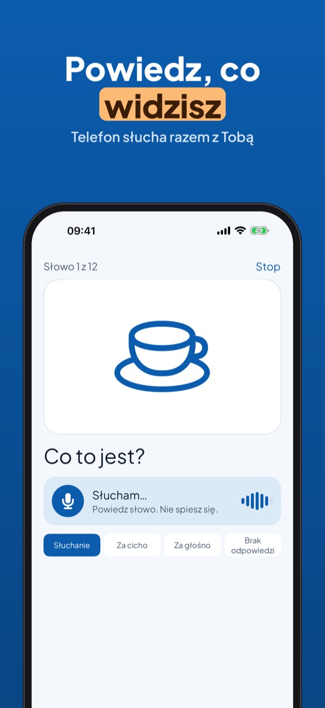
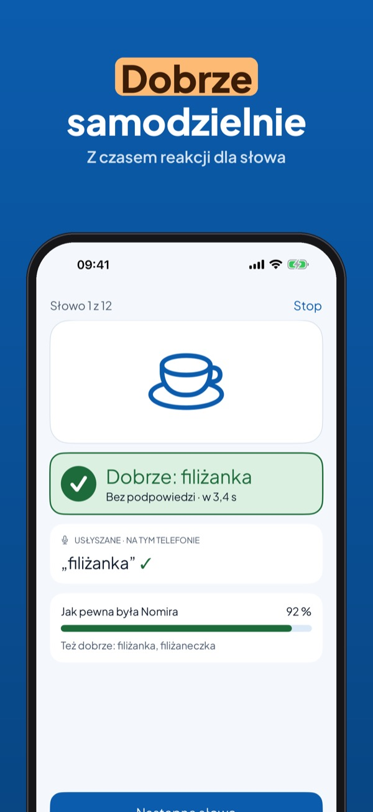
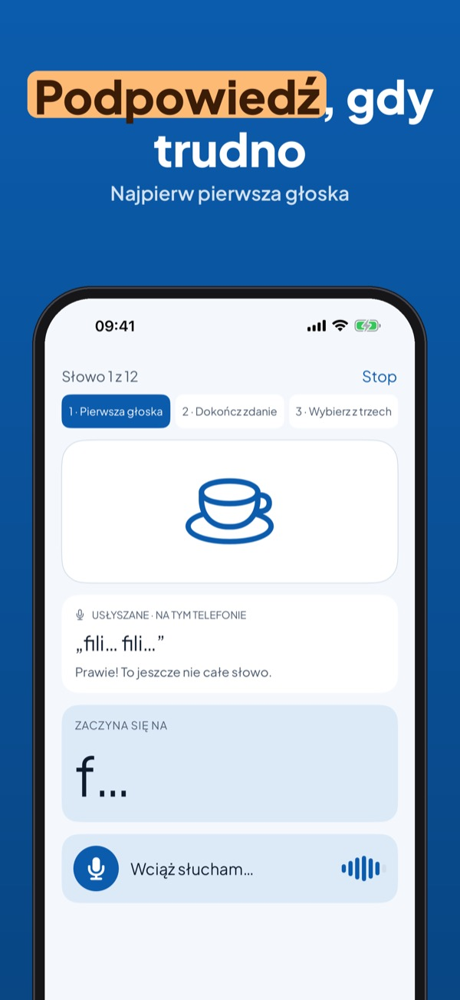
Nomira pomaga osobom z afazją codziennie ćwiczyć słowa. Widzisz obrazek i mówisz słowo na głos. Tam, gdzie iPhone rozpoznaje mowę na urządzeniu, Nomira słucha i pokazuje, czy słowo zostało usłyszane. Gdy się nie udaje, pojawia się podpowiedź: pierwsza głoska, zdanie do dokończenia, trzy słowa do wyboru.
Zestaw Kuchnia z 15 słowami, słuchanie, wszystkie trzy podpowiedzi, czas reakcji, postępy z tego tygodnia i samodzielne zaznaczanie działają bez zakupu. Nomira Plus to jednorazowy zakup: wszystkie 9 zestawów, także czasowniki, postępy z wcześniejszych tygodni i raport tygodniowy w PDF, który sam wysyłasz mailem, w Wiadomościach lub przez AirDrop. Bez subskrypcji, bez reklam.
Nomira to aplikacja do ćwiczeń: uzupełnienie zajęć z logopedą, nie ich zastępstwo. Nie stawia diagnozy i niczego nie leczy. Rozpoznawanie może się mylić; zawsze decydujesz Ty. Mowa jest rozpoznawana w telefonie; dźwięk nie jest zapisywany ani wysyłany. Jeśli Twój iPhone nie rozpoznaje polskiego na urządzeniu, sam zaznaczasz, czy się udało.
Terms of Use (EULA): https://www.apple.com/legal/internet-services/itunes/dev/stdeula/
Privacy: https://apps.baytech.nl/nomira-eu/
Vê a imagem, diz a palavra
Vê uma imagem e diz a palavra: o telemóvel ouve e ajuda com uma pista quando não sai. Todos os dias um conjunto curto, ao teu ritmo.
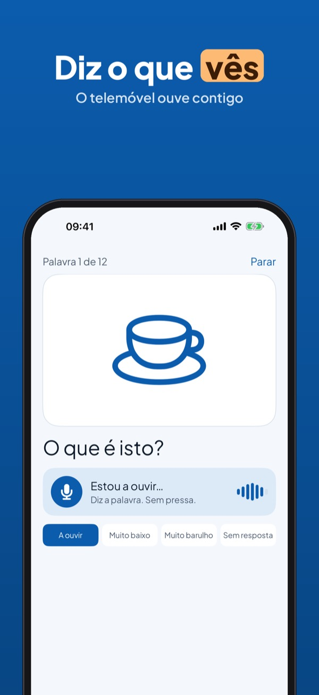
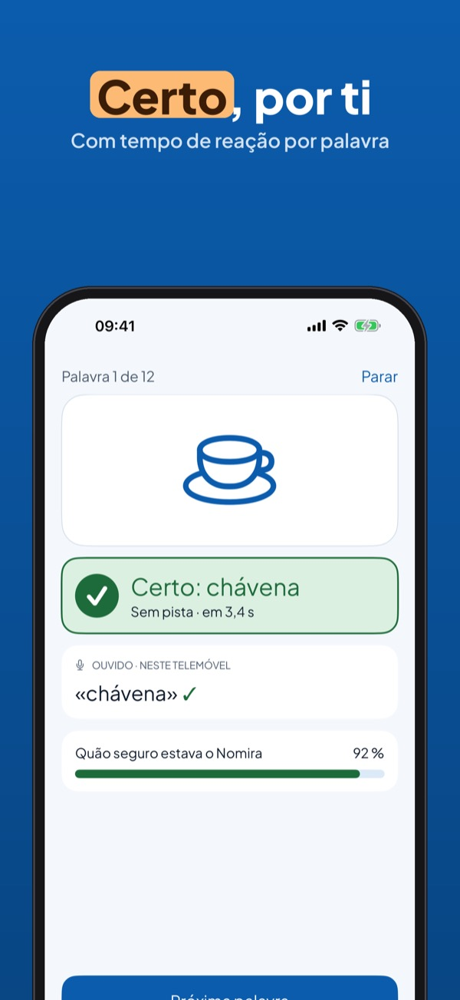
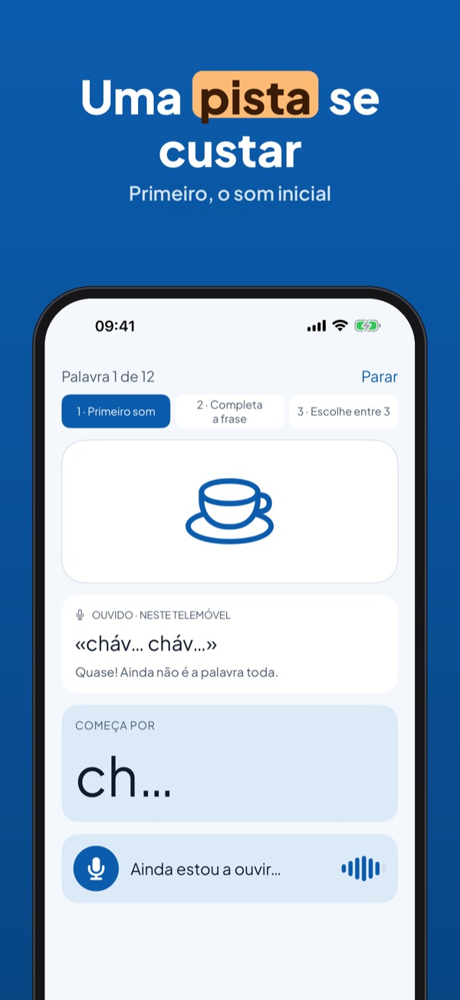
O Nomira ajuda pessoas com afasia a treinar palavras todos os dias. Vês uma imagem e dizes a palavra em voz alta. Onde o iPhone consegue reconhecer a fala no próprio aparelho, o Nomira ouve e mostra se a palavra foi ouvida. Se não sair, aparece uma pista: o primeiro som, uma frase para completar, três palavras à escolha.
O conjunto Cozinha com 15 palavras, a escuta, as três pistas, o tempo de reação, o progresso desta semana e o modo em que marcas tu se correu bem funcionam sem compra. O Nomira Plus é uma compra única: os 9 conjuntos, incluindo verbos, o progresso das semanas anteriores e o relatório semanal em PDF, que envias tu por e-mail, Mensagens ou AirDrop. Sem subscrição, sem anúncios.
O Nomira é uma app de treino: um complemento às sessões com o terapeuta da fala, não um substituto. Não faz diagnósticos nem trata nada. O reconhecimento pode enganar-se; decides sempre tu. A fala é reconhecida no telemóvel; nenhum som é guardado ou enviado. Se o teu iPhone não reconhecer português no aparelho, indicas tu se correu bem.
Terms of Use (EULA): https://www.apple.com/legal/internet-services/itunes/dev/stdeula/
Privacy: https://apps.baytech.nl/nomira-eu/
Uvidíš obrázek, řekneš slovo
Uvidíš obrázek a řekneš slovo: telefon poslouchá, a když to nejde, pomůže nápovědou. Každý den krátká sada, vlastním tempem.
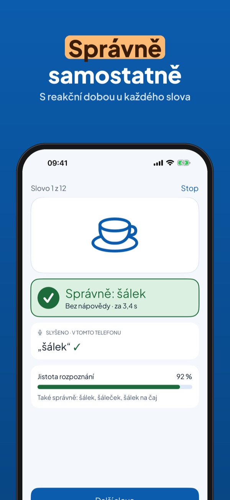
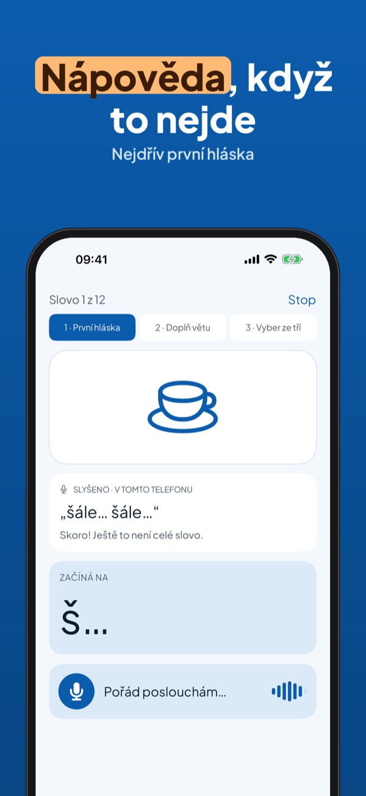
Nomira pomáhá lidem s afázií každý den cvičit slova. Uvidíš obrázek a řekneš slovo nahlas. Kde iPhone umí rozpoznat řeč přímo v zařízení, Nomira poslouchá a ukáže, zda slovo zaslechl. Když to nejde, přijde nápověda: první hláska, věta k doplnění, tři slova na výběr.
Sada Kuchyně s 15 slovy, poslech, všechny tři nápovědy, reakční doba, pokrok za tento týden a vlastní označování fungují bez nákupu. Nomira Plus je jednorázový nákup: všech 9 sad včetně sloves, pokrok z dřívějších týdnů a týdenní přehled v PDF, který sám pošleš e-mailem, ve Zprávách nebo přes AirDrop. Bez předplatného, bez reklam.
Nomira je aplikace na cvičení: doplněk k hodinám s logopedem, ne jejich náhrada. Nestanovuje diagnózu a nic neléčí. Rozpoznávání se může splést; rozhoduješ vždy ty. Řeč se rozpoznává v telefonu; zvuk se neukládá ani neodesílá. Pokud tvůj iPhone češtinu v zařízení nerozpozná, sám označíš, zda se to povedlo.
Terms of Use (EULA): https://www.apple.com/legal/internet-services/itunes/dev/stdeula/
Privacy: https://apps.baytech.nl/nomira-eu/
Mira la imagen, di la palabra
Mira una imagen y di la palabra: el móvil escucha y te ayuda con una pista cuando no sale. Cada día una serie corta, a tu ritmo.
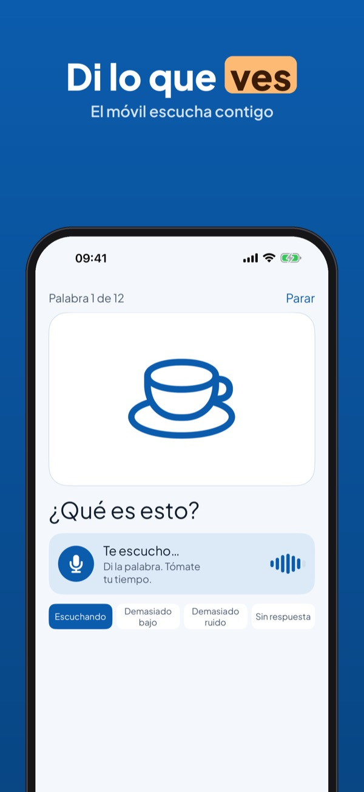
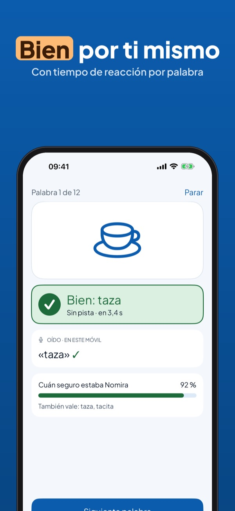
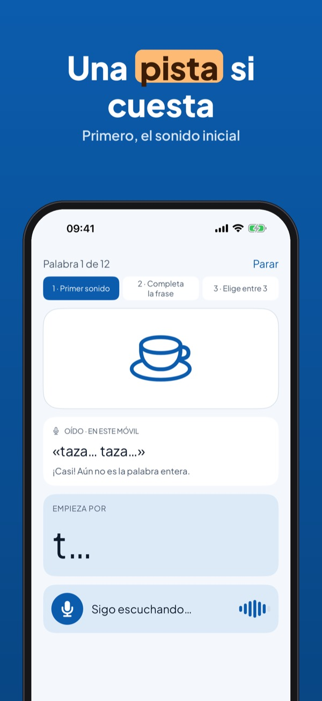
Nomira ayuda a personas con afasia a practicar palabras cada día. Ves una imagen y dices la palabra en voz alta. Nomira escucha en el móvil y muestra si ha oído la palabra. Si no sale, llega una pista: primero el sonido inicial, luego una frase para completar y al final tres palabras para elegir.
La serie Cocina con 15 palabras, la escucha, las tres pistas, el tiempo de reacción, el progreso de esta semana y el modo en que marcas tú si ha salido bien funcionan sin compra. Nomira Plus es una compra única: las 9 series, verbos incluidos, el progreso de semanas anteriores y el informe semanal en PDF, que envías tú por correo, Mensajes o AirDrop. Sin suscripción, sin anuncios.
Nomira es una app para practicar: un complemento a las sesiones con el logopeda, no un sustituto. No diagnostica ni trata nada. El reconocimiento puede fallar; siempre decides tú. El habla se reconoce en el móvil; no se guarda ni se envía ningún sonido. Sin micrófono, marcas tú si ha salido bien.
Terms of Use (EULA): https://www.apple.com/legal/internet-services/itunes/dev/stdeula/
Privacy: https://apps.baytech.nl/nomira-eu/
Vedi l’immagine, dì la parola
Guarda un’immagine e dì la parola: il telefono ascolta e ti aiuta con un suggerimento quando non viene. Ogni giorno una breve serie, con calma.
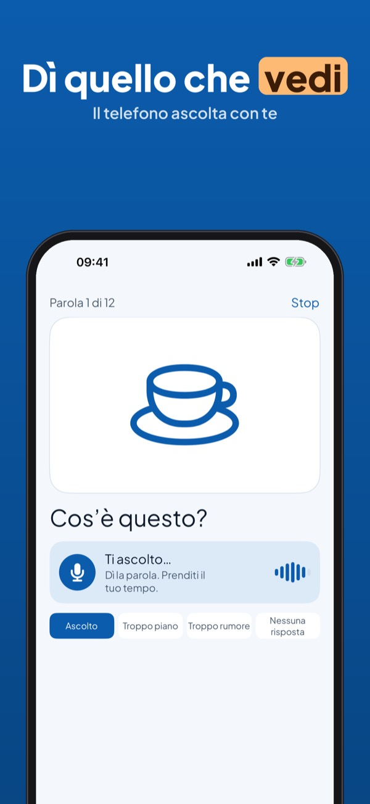
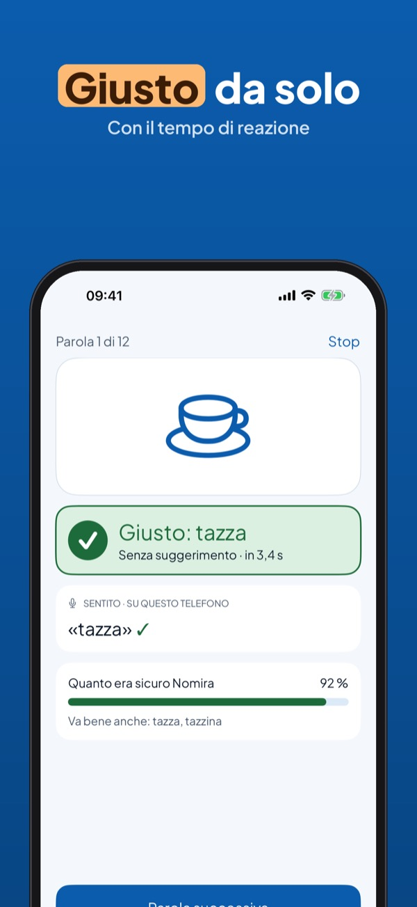
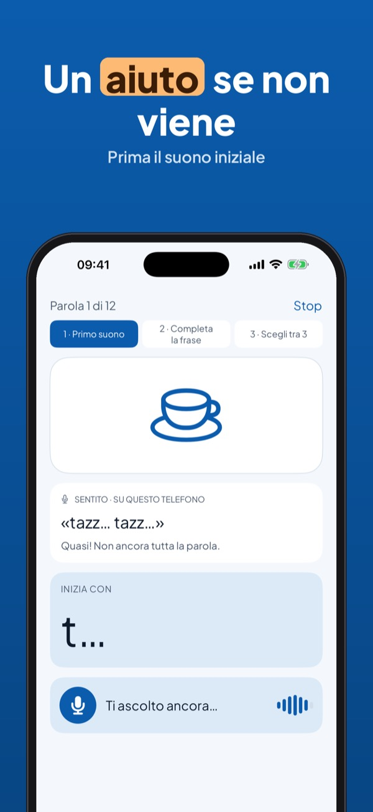
Nomira aiuta le persone con afasia a esercitarsi ogni giorno con le parole. Vedi un’immagine e dici la parola ad alta voce. Nomira ascolta sul telefono e mostra se ha sentito la parola. Se non viene, arriva un suggerimento: il primo suono, una frase da completare, tre parole tra cui scegliere.
La serie Cucina con 15 parole, l’ascolto, tutti e tre i suggerimenti, il tempo di reazione, i progressi di questa settimana e la modalità in cui segni tu se è andata bene funzionano senza acquisto. Nomira Plus è un acquisto unico: tutte le 9 serie, verbi compresi, i progressi delle settimane precedenti e il report settimanale in PDF, che invii tu via mail, Messaggi o AirDrop. Nessun abbonamento, nessuna pubblicità.
Nomira è un’app per esercitarsi: un complemento alle sedute con il logopedista, non un sostituto. Non fa diagnosi e non cura nulla. Il riconoscimento può sbagliare; decidi sempre tu. Il parlato è riconosciuto sul telefono; nessun suono viene salvato o inviato. Senza microfono, segni tu se è andata bene.
Terms of Use (EULA): https://www.apple.com/legal/internet-services/itunes/dev/stdeula/
Privacy: https://apps.baytech.nl/nomira-eu/
Se bilden, säg ordet
Se en bild och säg ordet: mobilen lyssnar och hjälper med en ledtråd när det tar stopp. Varje dag en kort omgång, i din egen takt.
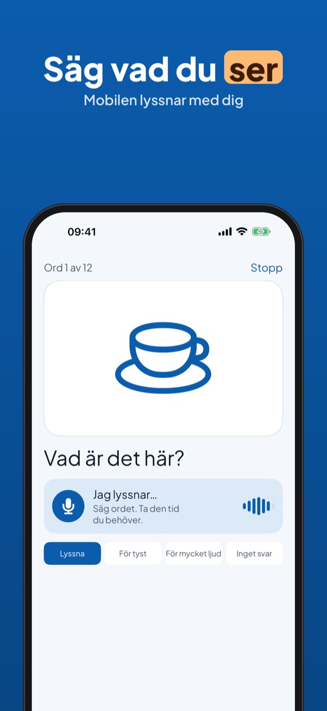
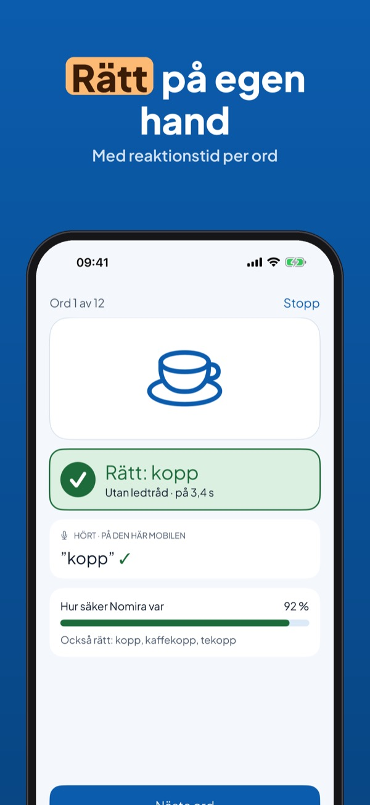
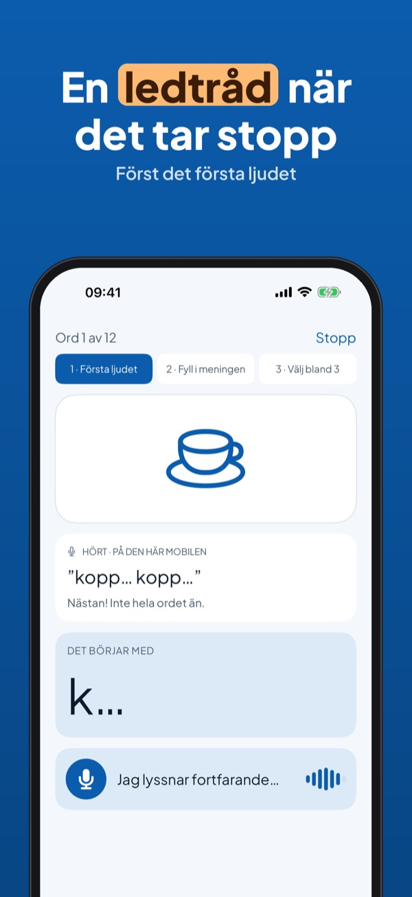
Nomira hjälper personer med afasi att öva ord varje dag. Du ser en bild och säger ordet högt. Där mobilen kan känna igen tal på enheten lyssnar Nomira och visar om ordet hördes. Går det inte kommer en ledtråd: först det första ljudet, sedan en mening att fylla i och till sist tre ord att välja mellan.
Omgången Kök med 15 ord, lyssning, alla tre ledtrådarna, reaktionstid, veckans framsteg och läget där du själv markerar om det gick bra fungerar utan köp. Nomira Plus är ett engångsköp: alla 9 omgångar, även verb, framsteg från tidigare veckor och veckorapporten som PDF, som du själv skickar via mejl, Meddelanden eller AirDrop. Ingen prenumeration, ingen reklam.
Nomira är en övningsapp: ett komplement till träffarna med logopeden, ingen ersättning. Appen ställer ingen diagnos och behandlar ingenting. Igenkänningen kan ta fel; du bestämmer alltid själv. Tal känns igen i mobilen; inget ljud sparas eller skickas. Om din iPhone inte känner igen svenska på enheten markerar du själv om det gick bra.
Terms of Use (EULA): https://www.apple.com/legal/internet-services/itunes/dev/stdeula/
Privacy: https://apps.baytech.nl/nomira-eu/
Bild sehen, Wort sagen
Sieh ein Bild und sag das Wort: Das Handy hört zu und hilft mit einem Hinweis, wenn es nicht klappt. Jeden Tag eine kurze Runde, in deinem Tempo.
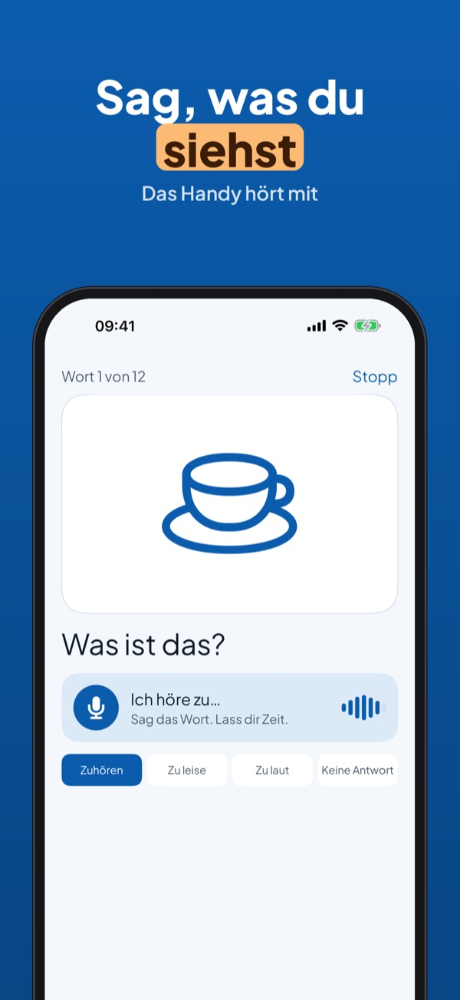
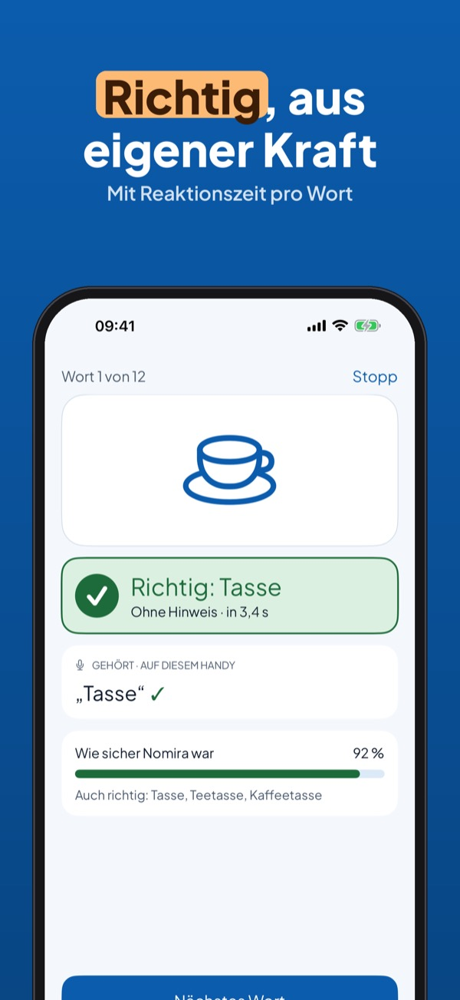
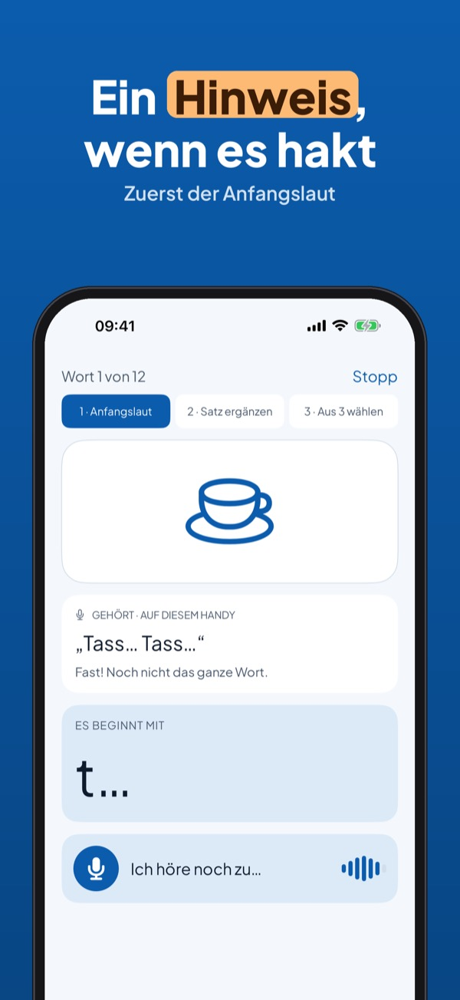
Nomira hilft Menschen mit Aphasie, jeden Tag Wörter zu üben. Du siehst ein Bild und sagst das Wort laut. Nomira hört auf dem Handy zu und zeigt, ob das Wort erkannt wurde. Klappt es nicht, kommt ein Hinweis: zuerst der Anfangslaut, dann ein Satz zum Ergänzen, zuletzt drei Wörter zur Auswahl.
Das Set Küche mit 15 Wörtern, Zuhören, alle drei Hinweise, Reaktionszeit, der Fortschritt dieser Woche und das Selbst-Markieren funktionieren ohne Kauf. Nomira Plus ist ein Einmalkauf: alle 9 Sets inklusive Verben, der Fortschritt früherer Wochen und der Wochenbericht als PDF, den du selbst per Mail, Nachrichten oder AirDrop verschickst. Kein Abo, keine Werbung.
Nomira ist eine Übungs-App: eine Ergänzung zu den Logopädie-Stunden, kein Ersatz. Sie stellt keine Diagnose und behandelt nichts. Die Erkennung kann sich irren; du entscheidest immer selbst. Sprache wird auf dem Handy erkannt; kein Ton wird gespeichert oder gesendet. Ohne Mikrofon markierst du selbst, ob es geklappt hat.
Terms of Use (EULA): https://www.apple.com/legal/internet-services/itunes/dev/stdeula/
Privacy: https://apps.baytech.nl/nomira-eu/
Vois l’image, dis le mot
Regarde une image et dis le mot : le téléphone écoute et t’aide avec un indice quand il ne vient pas. Chaque jour une courte série, à ton rythme.
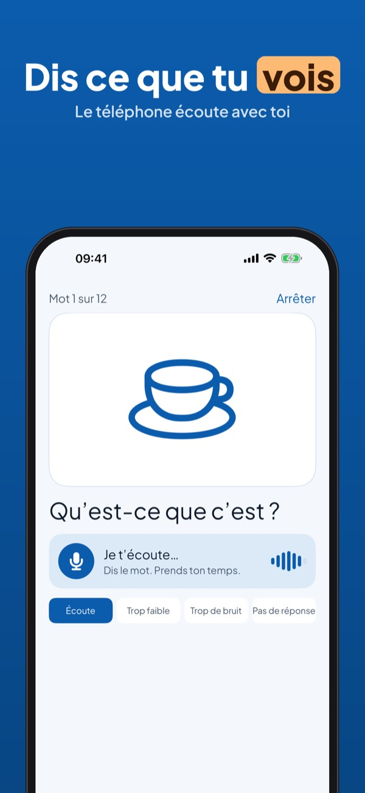
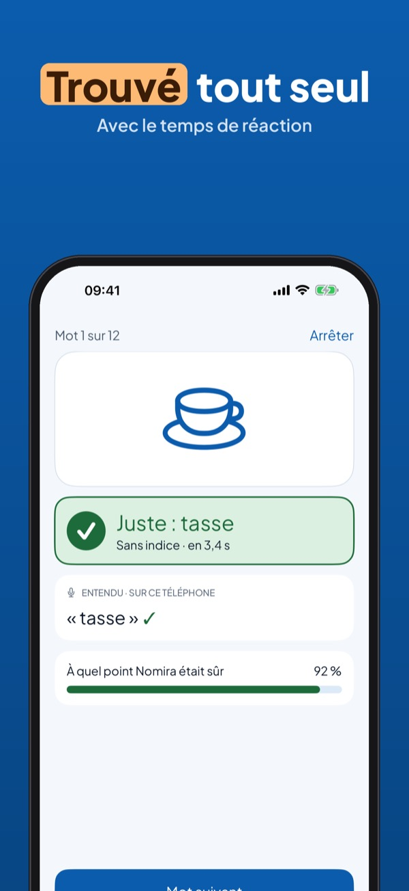
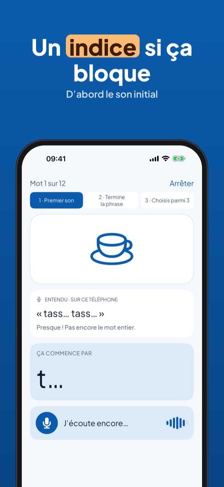
Nomira aide les personnes aphasiques à s’exercer chaque jour avec les mots. Tu vois une image et tu dis le mot à voix haute. Nomira écoute sur le téléphone et montre si le mot a été entendu. Si le mot ne vient pas, un indice arrive : le premier son, une phrase à compléter, puis trois mots au choix.
La série Cuisine de 15 mots, l’écoute, les trois indices, le temps de réaction, les progrès de la semaine et le mode où tu indiques toi-même si c’était juste s’utilisent sans achat. Nomira Plus est un achat unique : les 9 séries, verbes compris, les progrès des semaines précédentes et le bilan hebdomadaire en PDF, que tu envoies toi-même par mail, Messages ou AirDrop. Sans abonnement, sans pub.
Nomira est une app d’exercice : un complément aux séances d’orthophonie, pas un remplacement. Elle ne pose aucun diagnostic et ne soigne rien. La reconnaissance peut se tromper ; tu décides toujours. La parole est reconnue sur le téléphone ; aucun son n’est enregistré ni envoyé. Sans micro, tu indiques toi-même si c’était juste.
Terms of Use (EULA): https://www.apple.com/legal/internet-services/itunes/dev/stdeula/
Privacy: https://apps.baytech.nl/nomira-eu/